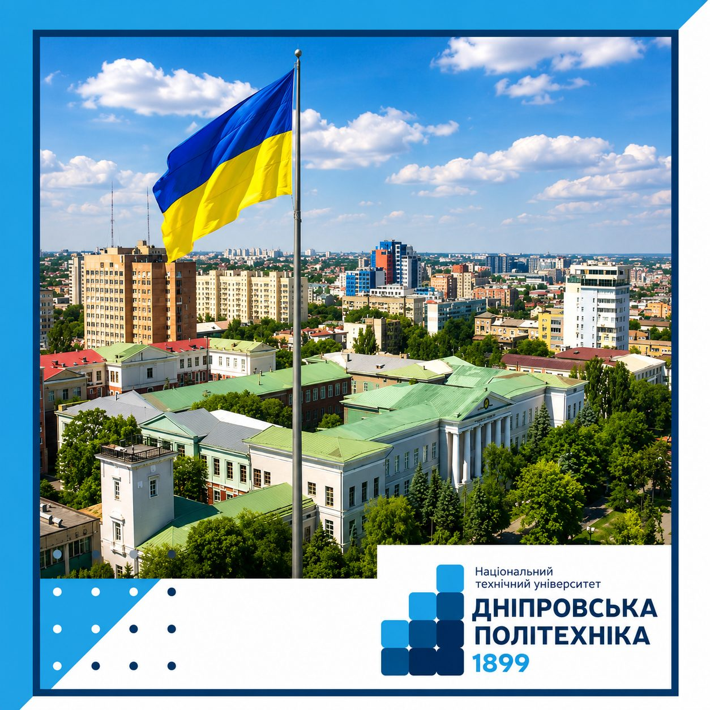

Кампус
Головний корпус, схема кампусу, навчальні корпуси, маршрути та базові сервіси.



Історичний вестибюль головного корпусу — одна з архітектурних перлин ДніпраКампус у самому центрі Дніпра
Головний корпус університету розташований за адресою просп. Дмитра Яворницького, 19, Дніпро, 49005 — за кілька хвилин пішки від центральних вулиць міста. Поруч розташовані навчальні корпуси, студентське містечко з гуртожитками та спортивний комплекс, що разом формують компактний і зручний для пересування кампус.
Перед 4-м навчальним корпусом облаштовано унікальний технічний музей просто неба: елементи гірничого обладнання та ковші кар'єрних екскаваторів, встановлені як символ інженерної спадщини університету.
З чого складається кампус
Головний навчальний корпус
Історична будівля початку XX століття з актовою залою, ректоратом і деканатами провідних інститутів.
4-й навчальний корпус
Сучасні аудиторії та майданчик-музей технічних експонатів просто неба перед входом.
Студентське містечко
Кілька багатоповерхових гуртожитків для студентів та аспірантів, зокрема гуртожиток №1 на просп. Яворницького, 21.
Спортивний комплекс
Зали для єдиноборств, фітнесу, футзалу та бадмінтону для тренувань і змагань між інститутами.
Навчально-геодезичний полігон
Виїзна практична база в с. Орлівщина для студентів геодезичних і гірничих спеціальностей.
Смарт-простори кампусу
Швидкісний Wi-Fi у зонах відпочинку, смарт-лекторії та обладнані комп'ютерні хаби.
Визнання серед університетів України
Хочеш прогулятися кампусом наживо?
Завітай на День відкритих дверей або приїжджай самостійно — головний корпус легко знайти в центрі Дніпра, а координатори приймальної комісії проведуть коротку екскурсію.
Дізнатися про екскурсію кампусом